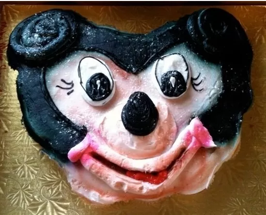

Receita de bolo
- 500g de farinha de trigo
- 16g de fermento em pó
- 2g de bicarbonato de sódio
- 1g de sal
- 200g de manteiga sem sal e em temperatura ambiente
- 360g de açúcar refinado
- 4 ovos (levemente batidos)
- Cozinhe a carne moída
- Adicione o sachê de molho à carne
- Despeje uma concha do molho bolonhesa no refratário
- Adicione uma camada de queijo e outra de presunto